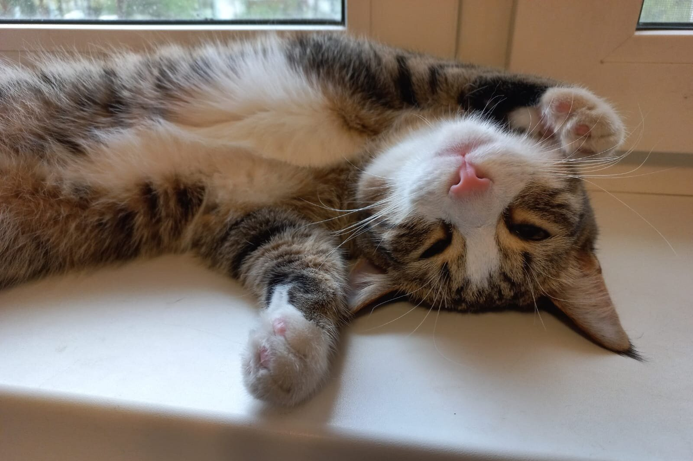
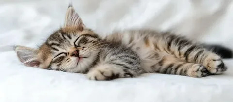
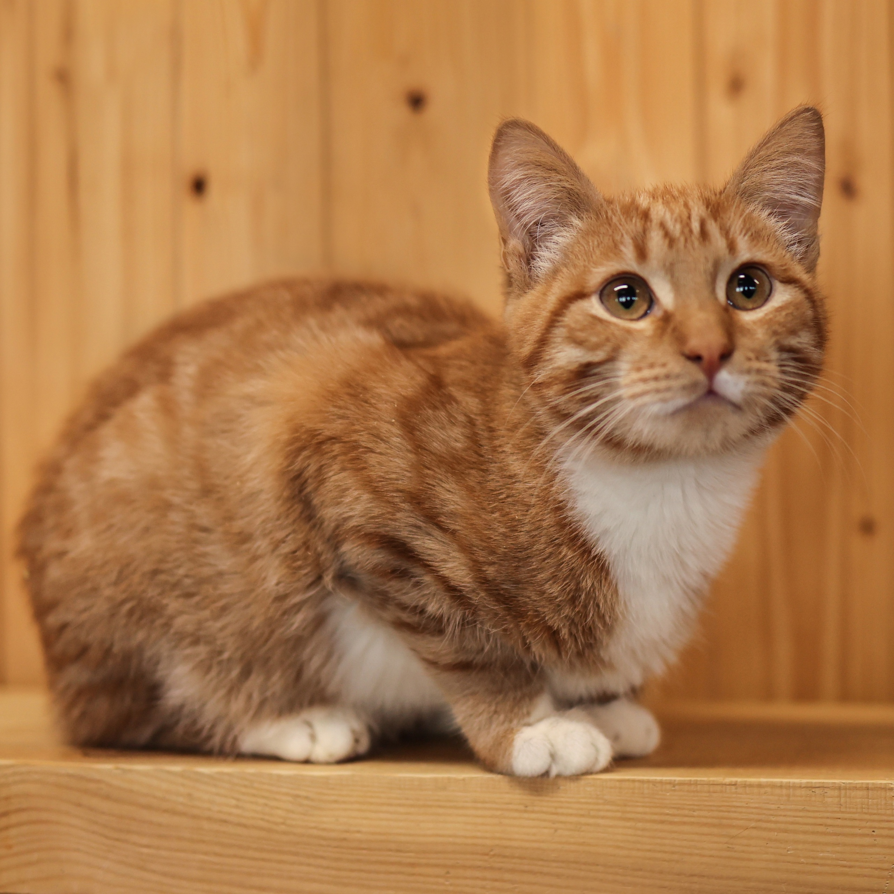
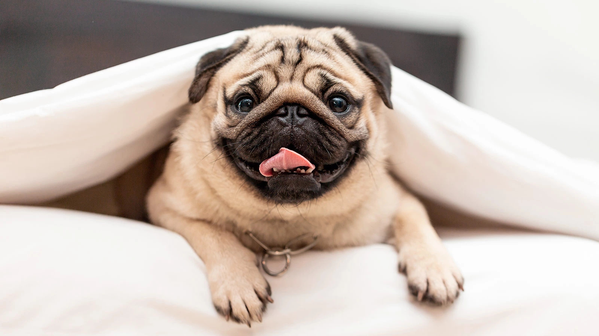
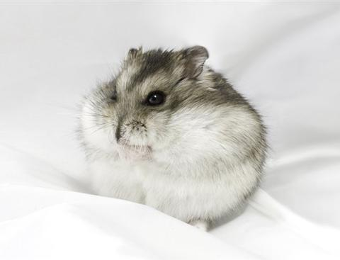

Муся
Кошка
Возраст: 3 года
Пол: женский
Характеристика: Муся — дружелюбная, ласковая и спокойная кошка, которая отлично адаптируется к новым условиям и любит принимать мягкие игрушки и уютные лежанки. Она прекрасно ладит с людьми и показывает терпение даже к маленьким детям. Впечатляет своим мягким и дружелюбным характером, предпочитая спокойную обстановку. Муся любит нежность и внимание, иногда любит побудить хозяина поиграть, но при этом уважает личное пространство. Она хорошо себя чувствует в доме или квартире, спокойна в присутствии других домашних животных. Если вы ищете спокойную и любящую питомицу, Муся станет отличным компаньоном и членом семьи!

Милка
Кошка
Возраст: 1 год
Пол: женский
Характеристика: Милка — очень милая и спокойная кошка, которая быстро завязывает контакт с людьми. Она любит мягко посидеть в руках и погреть своим пушистым телом. Очень аккуратная, чистоплотная и добрая. Хорошо ладит с другими животными и быстро адаптируется к новым условиям. Взрослая, но игривая — любит наиграться с игрушками и провести время в компании человека.

Рыжик
Кот
Возраст: 5 лет
Пол: мужской
Характеристика: Рыжик — это активный, умный и ласковый кот среднего размера с яркой рыжей шерстью и выразительными зелёными глазами. Уже в пять лет он отлично знает основные команды и любит играть, особенно с мышками и мячиками.

Луна
Собака
Возраст: 11 лет
Пол: женский
Характеристика: Луна — мудрая и добрая собака, которая ищет любящую семью или заботливых волонтеров. Это спокойная и ласковая пожилая собака, которая предпочитает уют и тихую обстановку. За годы она стала чуть медленнее, но всё так же любит внимание и мягкое поглаживание. Луна прекрасно ладит с людьми и чувствует себя хорошо в спокойной компании. Она уважительно относится к другим животным, и с возрастом стала чуть более уравновешенной. Желает найти дом, где её будут ценить и заботиться о ней, ведь она заслужила тихую и Любящую жизнь на пенсии. Если вы ищете преданного друга, который всегда рядом и умеет ценить уют, Луна — отличный выбор.

Валера
Хомяк
Возраст: 2 года
Пол: мужской
Характеристика: Валера — спокойный и ласковый хомячок. Он предпочитает спокойные условия и тихую обстановку, любит уютные уголки и мягкое спальное место. За время нахождения в приюте проявил себя как доброжелательный и дружелюбный питомец.